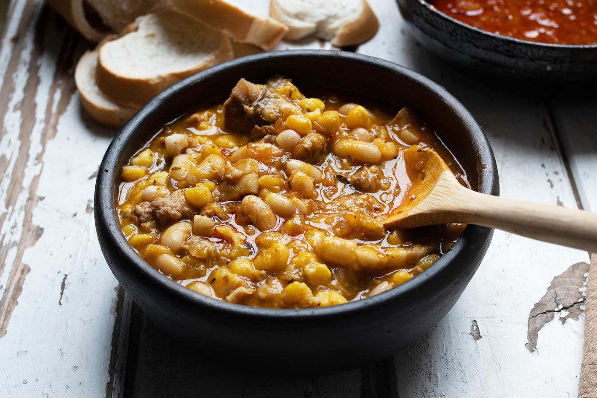

Argentinian Locro Stew

Description
I love any meat stew and this locro meat stew is simply the best. How can
you beat a big dish or protein combined with veggies. The entire family
will love this dish.
Ingredients
- 1 cup white corn or hominy-style corn
- 1 cup porotos de soja or soybeans
- 1 cup semolina wheat
- 4 cups meat—can be skirt steak, ossobuco, pork belly or pork ribs
-
2 chorizo colorados, can be replaced with regular chorizo or smoked
pancetta
- 1/2 calabaza—or 16-oz piece of pumpkin or acorn squash
- 2 cups potatoes, cubed
- 2 cups carrots, cubed
- 2 scallions or 2 leeks
- 1/2 bunch celery, about 3 stalks
- smoked paprika, to taste (about 1 Tbsp)
- oregano, to taste (about 1 Tbsp)
- salt to taste (about 1 to 2 tsp)
Steps
- Soak the beans and grains for at least 12 hours.
-
Boil the meat in water to cover in a large pot—2 hours minimum or 1 hour
in pressure cooker.
-
Saute or brown the chorizo in a separate pan, then cut into small
pieces.
- Chop all the vegetables into small pieces.
-
Add all the ingredients to a large caserola or pan, on medium low heat.
- Add the spices: smoked paprika, oregano and salt.
- Cook until all the vegetables are soft.
-
If you wish, you can add fresh-ground black pepper. A disfrutarlo!